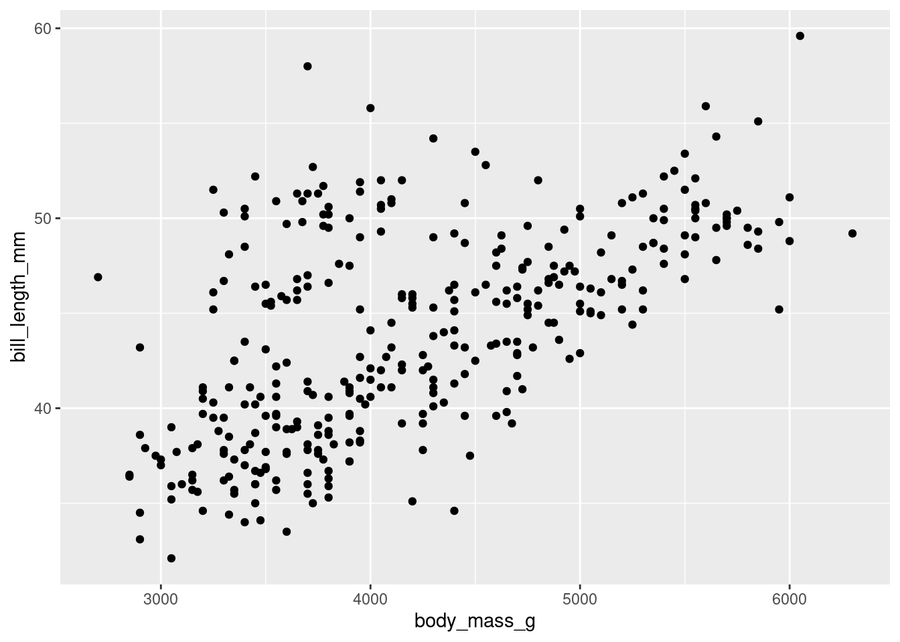

Once the file is downloaded, move it to your project folder in RStudio and open it there.
4.1.3 Restart R and run all chunks
In RStudio, select “Restart R and Run All Chunks” from the “Run” menu.
4.1.4 Load packages
We load the tidyverse package to get ggplot2 and the palmerpenguins package to work with the penguin data.
library(tidyverse)
── Attaching core tidyverse packages ──────────────────────── tidyverse 2.0.0 ──
✔ dplyr 1.1.4 ✔ readr 2.1.5
✔ forcats 1.0.0 ✔ stringr 1.5.1
✔ ggplot2 3.5.1 ✔ tibble 3.2.1
✔ lubridate 1.9.4 ✔ tidyr 1.3.1
✔ purrr 1.0.2
── Conflicts ────────────────────────────────────────── tidyverse_conflicts() ──
✖ dplyr::filter() masks stats::filter()
✖ dplyr::lag() masks stats::lag()
ℹ Use the conflicted package (<http://conflicted.r-lib.org/>) to force all conflicts to become errors
library(palmerpenguins)
4.2 A note about mathematical notation
From time to time, we will use mathematical notation that can’t be typed directly on the keyboard. For example, let’s suppose we want to typeset the quadratic formula, which involves a complicated fraction as well as a square root symbol.
When such notation appears, it will be surrounded by double dollar signs as follows:
\[
x = \frac{-b \pm \sqrt{b^{2} - 4ac}}{2a}
\]
The Quarto document will interpret this special mathematical notation and show it on the screen as well as in the HTML document.1 If the nicely formatted formula does not appear on your screen, place your cursor anywhere inside the math formula and hit Ctrl-Enter or Cmd-Enter (PC or Mac respectively).
Sometimes, we want such math to appear inline. We can do this with single dollar signs. For example, the distance formula is \(d = \sqrt{(x_{2} - x_{1})^{2} + (y_{2} - y_{1})^{2}}\), a fact you may have learned a long time ago.
This will not show up as a formatted equation in the Quarto document, but it will show up in the HTML file. If you want to check that it worked properly without having to render the HTML, you can either hover your cursor over the math formula and wait a second, or you can place your cursor anywhere inside the math formula and hit Ctrl-Enter or Cmd-Enter (PC or Mac respectively) to see a pop-up window showing the mathematical content properly formatted.
You will be shown examples of any mathematical notation you need to use in any given chapter, so feel free to copy/paste/modify any math notation you need.
4.3 Statistics
The word “statistics” has several meanings. On one hand, it’s an entire field of study, as in the subject of this course. More specifically, though, a “statistic” is any kind of numerical summary of data. While there are many ways to summarize numerical data, they mostly fall into two main flavors: measures of center and measures of spread. Measures of center try to estimate some kind of average, middle, or common value in data. Measures of spread try to estimate something like the width, range, variability, or uncertainty of data.
There are two pairs of measurements that we will learn about in this chapter: the mean/standard deviation, and the median/IQR.
4.3.1 Mean and standard deviation
The first pair of the summary statistics we’ll discuss consists of the mean and the standard deviation.
The mean of a variable \(y\)—denoted \(\bar{y}\) and pronounced “y bar”—is calculated by summing all the values of the variable, and dividing by the total number of observations. In formula form, this is
\[
\bar{y} = \frac{\sum y}{n}.
\]
This is a measure of center since it estimates the “middle” of a set of numbers. It is calculated in R using the mean command.
Throughout this chapter, we will be using the penguins data set. (If you need a reminder, look at the help file for penguins using one of the methods discussed in Chapter 2.)
If we want to calculate the mean body mass of our penguins (in grams), we type the following:
mean(penguins$body_mass_g)
[1] NA
Unfortunately, this didn’t give us an answer. As you may recall from previous chapters, this is because we are missing data. There are several values of body mass missing in this data. We need an extra piece of code to tell R to ignore that missing data and give us the mean of the valid data.
mean(penguins$body_mass_g, na.rm =TRUE)
[1] 4201.754
(The term na.rm stands for “NA remove”.)
We never leave such numbers without interpretation. In a full, contextually meaningful sentence, we might say, “The mean body mass of this group of penguins is approximately 4200 grams.”
Notice that we mentioned the penguins, placing this number in context, and we mentioned the units of measurement, grams. (Otherwise, what would this number mean? 4200 pounds? Okay, probably not, but you should always mention the units of measurement.) Also notice that we rounded the final value. A gram is a very small unit of measurement, so there is no need to report this value to many decimal places.
If we use inline code, we can say, “The mean body mass of this group of penguins is 4201.754386 grams.” There are ways of rounding this number as well, but it’s a bit of a hassle to do so in inline code.
The corresponding measure of spread is the standard deviation. Usually this is called \(s\) and is calculated using a much more complicated formula:
\[
s = \sqrt{\frac{\sum (y - \bar{y})^2}{n - 1}}.
\]
This is a measure of spread because the \((y - \bar{y})\) term measures how far away each data point is from the mean.
In R, this is calculated with the sd command. Again, we’ll need to add na.rm = TRUE.
sd(penguins$body_mass_g, na.rm =TRUE)
[1] 801.9545
“The standard deviation of this group of penguins is about 800 grams.”
Or using inline code:
“The standard deviation of this group of penguins is 801.9545357 grams.”
The mean and the standard deviation should always be reported together. One without the other is incomplete and potentially misleading.
Another related measurement is the variance, but this is nothing more than the standard deviation squared:
\[
s^2 = \frac{\sum (y - \bar{y})^2}{n - 1}.
\]
(Compare this formula to the one for the standard deviation. Nothing has changed except for the removal of the square root.) We rarely use the variance in an introductory stats class because it’s not as interpretable as the standard deviation. The main reason for this is units. If the data units are grams, then both the mean and the standard deviation are also reported in grams. The variance has units of “grams squared”, but what does that even mean? If you need to calculate the variance in R, the command is var.
var(penguins$body_mass_g, na.rm =TRUE)
[1] 643131.1
You can check and see that the number above really is just 801.9545357 squared. Regarding the inline code in the previous sentence, remember, in the Quarto document, you can click inside the inline code and hit Ctrl-Enter or Cmd-Enter. In the HTML document, the number will be calculated and will magically appear.
4.3.2 Median and IQR
Another choice for measuring the center and spread of a data set is the median and the IQR.
The median is just the middle value if the list of values is ordered. In R, it is calculated using the median command.
median(penguins$body_mass_g, na.rm =TRUE)
[1] 4050
The median body mass of these penguins is 4050 grams.
The median value depends on whether the number of data points is an even or odd number. If it’s odd, there is a middle value in the list. Convince yourself this is true; for example, look at the numbers 1 through 7.
1:7
[1] 1 2 3 4 5 6 7
The number 4 is in the middle of the list, with three numbers to either side.
However, if there are an even number of data points, there is no number right in the middle:
1:8
[1] 1 2 3 4 5 6 7 8
The “midpoint” of this list would lie between 4 and 5 with four values to either side of this line. If this is the case, we calculate the median by taking the mean of the two numbers straddling the middle. In the case of 1 though 8 above, the median would be 4.5.
A nice shortcut “trick” for figuring out where the middle value should be is to use the formula \((n + 1)/2\) where n is the number of data points:
\[
\frac{n + 1}{2}
\]
As before, if n = 7, then the formula says
\[
\frac{7 + 1}{2} = 4
\]
The median is the 4th value in the list.
If n = 8,
then the formula says
\[
\frac{8 + 1}{2} = 4.5
\]
The middle of the list of numbers is between the 4th and 5th entries. The median will be the average of those two numbers.
Let’s print out the entire body_mass_g variable, all 342 valid values (not including the missing values, of course). If we’re clever about it, we can see them in order using the sort command.
If there are 342 penguins in this data set with body mass data, between which two values in the list above would the median lie? In other words, between what two positions in the list will be median be found? Show your work using the \((n + 1)/2\) trick.
Verify that the median you find from this list is the same as the one we calculated with the median command above.
Please write up your answer here.
Calculating the interquartile range—or IQR—requires first the calculation of the first and third quartiles, denoted Q1 and Q3. If the median is the 50% mark in the sorted data, the first and third quartiles are the 25% and the 75% marks, respectively. One way to compute these by hand is to calculate the median of the lower and upper halves of the data separately. Then again, it’s hard to know how to split the data set into halves if there are an odd number of observations. There are many different methods for computing percentiles in general, but you don’t need to worry too much about the particular implementation in R. One you have Q1 and Q3, the IQR is just
\[
IQR = Q3 - Q1
\]
In R, you can get the IQR by using—are you ready for this?—the IQR command.
IQR(penguins$body_mass_g, na.rm =TRUE)
[1] 1200
The IQR for this group of penguins is 1200 grams.
The IQR is a measure of spread because the distance between Q1 and Q3 measures the span of the “middle 50%” of the data.
A general function for computing any percentile in R is the quantile function. For example, since Q1 is the 25th percentile, you can compute it as follows:
The 25% label is cute, but somewhat unnecessary, and it will mess up a later command, so let’s get rid of it:
Q1 <-unname(Q1)Q1
[1] 3550
Exercise 2(a)
Now you compute Q3. (Hint: what number will go in the quantile function instead of 0.25?)
# Add code here to compute, store, and print out Q3
Exercise 2(b)
Reassign Q3 using the unname command as we did above to strip the unnecessary label.
# Add code here that uses the unname command
Exercise 2(c)
Subtract Q3 minus Q1 in R. (Literally, the code is just Q3 - Q1.)
Verify that the output below matches the value of the IQR we calculated earlier.
# Add code here to compute Q3 - Q1.
The median and the IQR should always be reported together.
Also, don’t mix and match. For example, it doesn’t really make sense to report the mean and the IQR. Nor should you report the median and the standard deviation. They go together in pairs: either the mean and the standard deviation together, or the median and the IQR together.
4.3.3 Robust statistics
Some statistics are more sensitive than others to features of the data. For example, outliers are data points that are far away from the bulk of the data. The mean and especially the standard deviation can change a lot when outliers are present. Also, skewness in the data frequently pulls the mean too far in the direction of the skew while simultaneously inflating the standard deviation. (We’ll learn more about skewed data later in this chapter.)
On the other hand, the median and IQR are “robust”, meaning that they do not change much (or at all) in the presence of outliers and they tend to be good summaries even for skewed data.
Exercise 3
Explain why the median and IQR are robust. In other words, why does an outlier have little or no influence on the median and IQR?
Please write up your answer here.
4.3.4 Five-number summary
A five-number summary is the minimum, Q1, median, Q3, and maximum of a set of numbers.
The summary command in R gives you the five-number summary, and throws in the mean for good measure. (Note that it does not require na.rm = TRUE!)
summary(penguins$body_mass_g)
Min. 1st Qu. Median Mean 3rd Qu. Max. NA's
2700 3550 4050 4202 4750 6300 2
You can, of course, isolate the various pieces of this. You already know most of the commands below. (These individual commands all do require na.rm = TRUE.)
min(penguins$body_mass_g, na.rm =TRUE)
[1] 2700
median(penguins$body_mass_g, na.rm =TRUE)
[1] 4050
max(penguins$body_mass_g, na.rm =TRUE)
[1] 6300
Remember the quantile function from earlier, where we computed Q1? We’re going to use it in a new way. This is what we did before:
What is the small difference between the way quantile was used in a previous exercise versus the way it is used here? How did that change the output?
Please write up your answer here.
Also, don’t forget about the trick for using R commands inline. If you need to mention a statistic in the middle of a sentence, there is no need to break the sentence and display a code chunk. Be sure you’re looking at the Quarto document (not the HTML file) to note that the numbers in the next sentence are not manually entered, but are calculated on the fly:
There are 344 penguins in this data set and their median body mass is 4050 grams.
Exercise 5
Type a full, contextually meaningful sentence using inline R code (as above, but changing the commands) reporting the minimum and maximum body mass (in grams) in our data set.
Remember that inline code requires a backtick immediately followed by the letter r and then a space. Then you can type your R code. The code must be followed by another backtick. You will need two pieces of inline code in your answer to report both the minimum and maximum in context.
Please write up your answer here.
4.4 Graphing one numerical variable
From the penguins data, let’s consider again the body mass in grams. This is clearly a numerical variable.
The single most useful display of a single numerical variable is a histogram. Here is the ggplot command to do that:
`stat_bin()` using `bins = 30`. Pick better value with `binwidth`.
Warning: Removed 2 rows containing non-finite outside the scale range
(`stat_bin()`).
The way histograms work is to create “bins”, which are ranges of numbers along the x-axis. R goes through the data and counts how many observations fall into each bin. In that way, a histogram is somewhat like a bar chart. However, a bar chart uses bars to represent distinct, discrete categories, whereas a histogram uses bars that are all next to each other to represent values along a continuous numerical range. Histograms are meant to give you–at a quick glance–a sense of the “shape” of the data.
4.4.1 The shape of data
What do we mean by “shape”? Generally, we look for three things:
Modes
Modes are peaks in the data. These are places where data tends to cluster, representing common values of the numerical variable. In the penguin data, there appears to be a big mode between about 3500 and 4000 grams. When data has one clear mode, we call the data unimodal. But data can also be bimodal, or more generally, multimodal. This often happens when the data contains multiple groups that are different from each other. In this case, we know there are three species of penguin in the data, so if those species are drastically different in their body mass, we might be looking at multimodal data. We’ll explore this question more later in the chapter. For now, it’s hard to say what’s going on because the above histogram has a lot of spiky bars popping up all over. It’s not completely obvious how many modes there might be.
Symmetry
If there is one mode, we can also ask if the data is spread evenly to the left and right of that mode. If so, we call the data symmetric. No data is perfectly symmetric, but we are looking for overall balance between the areas to the left and right of the mode. When data is not symmetric, we call it skewed. Assuming that there is one big mode around 3500 or 4000, the body mass data above is skewed. There is clearly more data to the right of the mode than to the left. The right side of the histogram stretches out further than the left relative to the mode. Therefore, the body mass data is right-skewed. There is a longer “tail” to the right. If it were the opposite, it would be left-skewed. It is common for beginning students to confuse these two terms. Be aware that we are not concerned about where the mode is. We want to know which side has more data spread into a longer tail. That is the direction of the skewness.
Outliers.
Outliers are data points that are far from the bulk of the data. The body mass data above appears to have no outliers. We are looking for a large gap between the main “mass” of data and any lingering data points far away from that mass. There is no such large gap in the histogram above.
Whenever you are asked about the “shape” of a numerical variable, be sure to comment on (1) modes, (2) symmetry, and (3) outliers.
Generally, the default binning for ggplot histograms is not great. This is by design. The creator of the ggplot2 package, Hadley Wickham, said the following:
“In ggplot2, a very simple heuristic is used for the default number of bins: it uses 30, regardless of the data. This is perverse, and ignores all of the research on selecting good bin sizes automatically, but sends a clear message to the user that he or she needs to think about, and experiment with, the bin width. This message is reinforced with a warning that reminds the user to manually adjust the bin width.”
Indeed, if you look at the output from the graphing command above, you can see that ggplot informs you that you should pick a better value for the binwidth. You can also see that the bins aren’t ideal. They are too narrow, which means that arbitrary differences between bins show up as “random” spikes all over the graph. These spikes can confuse the issue of how many modes appear in the data.
Instead, we should aim to use bins that show the overall shape of the data and smooth it out a bit. Look back at the scale of the x-axis to assess how wide each bar should be. There’s no one correct answer. In this case, the bins ought to be a little wider. Since our x-axis goes from about 2500 to 6500, maybe we should try a binwidth of 250. And if 250 doesn’t look good, nothing prevents us from trying a different number.
It’s also easier to interpret the histogram when the bins’ edges line up with numbers that are easy to see in the plot. Use boundary to determine where you want the bin boundaries to fall. For example, if we set the boundary to 3500, that means that one bar will start with its left edge at 3500. This is convenient because there is a tick mark labeled there on the x-axis. The boundary number is pretty arbitrary; once one boundary is set, it determines where all the other bins will line up. With a binwidth of 250, we’d get the same graph if the boundary were set to 3000 or 3250 or 5750, or even 0. Any other multiple of 250 would give the same graph.
We use binwidth and boundary inside the parentheses of the geom_histogram to modify these parameters.
Warning: Removed 2 rows containing non-finite outside the scale range
(`stat_bin()`).
Even with the smoother look, it appears that there are multiple modes, maybe three? Do these correspond to the three species of penguin? Stay tuned.
(Note that we are still seeing a warning, but this warning is about missing data. We can’t do anything about that, so we can safely ignore this warning.)
Exercise 6(a)
Here is a histogram of the penguin bill lengths (measured in millimeters):
Warning: Removed 2 rows containing non-finite outside the scale range
(`stat_bin()`).
Write a short paragraph describing the shape of the distribution of penguin bill lengths, focusing on the three key shape features (modes, symmetry, and outliers).
Please write up your answer here.
Exercise 6(b)
The last question was a trick question!
Change the binwidth (no need to change the boundary) to something smaller to see more clearly the bimodal nature of the distribution.
# Add code here that changes the binwidth of the last histogram to see# the bimodal nature of the distribution.
Exercise 7(a)
Make a histogram of the variable flipper_length_mm. Start with a histogram where you don’t modify the binwidth or boundary. (In other words, use geom_histogram() with nothing inside the parentheses.)
# Add code here to create a histogram of flipper length
Exercise 7(b)
By examining the scale on the x-axis above, repeat the command, but this time change the binwidth until you are satisfied that the bins are neither too wide nor too narrow. (You can set the boundary too, but your choice of boundary is not super important.)
# Add code here to modify the histogram of flipper length,# adding binwidth and boundary
Exercise 7(c)
Write a short paragraph describing the shape of the distribution of penguin flipper lengths, focusing on the three key shape features (modes, symmetry, and outliers).
Please write up your answer here.
4.4.2 Less useful plot types
There are several other graph types that one might see for a single numerical variable: e.g., dotplots, stem-and-leaf plots, boxplots, etc. We’re not big fans of dotplots or stem-and-leaf plots as they are just messier versions of histograms. We do like boxplots, but they are typically less informative than histograms. Boxplots are much better for comparing groups, and we’ll see them later in the chapter.
4.5 Graphing two numerical variables
The proper graph for two numerical variables is a scatterplot. We graph the response variable on the y-axis and the predictor variable on the x-axis.2
Let’s consider a possible association between bill length and body mass. For this question, there is not really a strong preference for which variable serves as response and which variable servers as predictor. We’ll consider bill length as the response variable and body mass as the predictor.
Since we are plotting two variables, we have two aesthetics, one on the y-axis (the response variable) and one on the x-axis (the predictor variable). Since scatterplots use points to plot each data value, the correct layer to add is geom_point().
ggplot(penguins, aes(y = bill_length_mm, x = body_mass_g)) +geom_point()
Warning: Removed 2 rows containing missing values or values outside the scale range
(`geom_point()`).

We are looking for evidence of a relationship between the two variables. This will manifest as a pattern in the data. We are interested in answering the following questions:
Linearity
Is the association linear? In other words, do the data points lie roughly in a straight line pattern? The scatterplot above is a bit “cloudy” but generally moves from lower left to upper right in a straight (not curved pattern). It’s not a completely random scatter of dots.
Direction
If the pattern is linear, it is a positive relationship or a negative one? Positive means that the line moves from lower left to upper right. Negative means it moves from upper left to lower right. If you recall the direction of slopes from high school algebra class, a positive association corresponds to a line with a positive slope, and similarly for a negative association. In the data above, lower values of body mass correspond to lower bill lengths, and higher values of body mass correspond to higher bill lengths. So this is a positive association.
Strength
If there is a pattern, how tight is the pattern? Do the data points stay close to a straight line, or are they pretty spread out and only generally moving in one direction. A strong relationship is one that is tightly packed around a line or curve. The relationship above is not strong. We might use terms like “weak”, “moderately weak”, or “moderate”, but definitely not strong.
Outliers
Are there outliers? These will be points that are isolated and relatively far from the bulk of the data. There are a few points above that are borderline, but none is a particularly strong outlier, especially given how spread out the rest of the data is.
Exercise 8
Here is a scatterplot of flipper lengths against body mass:
ggplot(penguins, aes(y = flipper_length_mm, x = body_mass_g)) +geom_point()
Warning: Removed 2 rows containing missing values or values outside the scale range
(`geom_point()`).
Write a short paragraph describing the association of penguin flipper lengths and body mass, focusing on the four key features (linearity, direction, strength, and outliers).
Please write up your answer here.
4.6 Graphing grouped numerical data
Suppose you want to analyze one numerical variable and one categorical variable. Usually, the idea here is that the categorical variable divides up the data into groups and you are interested in understanding the numerical variable for each group separately. Another way to say this is that your numerical variable is response and your categorical variable is predictor. (It is also possible for a categorical variable to be response and a numerical variable to be predictor. This is common in so-called “classification” problems. We will not cover this possibility in this course, but it is covered in more advanced courses.)
This turns out to be exactly what we need in the penguins data. Throughout the above exercises, there was a concern that the penguin measurements are fundamentally different among the three different species of penguin.
Graphically, there are two good options here. The first is a side-by-side boxplot.
ggplot(penguins, aes(y = body_mass_g, x = species)) +geom_boxplot()
Warning: Removed 2 rows containing non-finite outside the scale range
(`stat_boxplot()`).
Notice the placement of the variables. The y-axis is body_mass_g, the numerical variable. The x-axis variable is species; the groups are placed along the x-axis. This is consistent with other graph types that place the response variable on the y-axis and the predictor variable on the x-axis.
The other possible graph is a stacked histogram. This uses a feature called “faceting” that creates a different plot for each group. The new ggplot command is called facet_grid. The only slightly unusual syntax you need to know is that the predictor variable has to be inside vars() as in the following code chunk:
Warning: Removed 2 rows containing non-finite outside the scale range
(`stat_bin()`).
Exercise 9
Explain why that last graph (which might be called a side-by-side histogram) is less effective than the earlier stacked histogram. (Hint: which variable can you line up with your eyes when the histograms are stacked vertically rather than horizontally?)
Please write up your answer here.
The other thing that kind of sucks is the fact that the y-axis is showing counts. That makes it harder to see the distribution of body mass among Chinstrap penguins, for example, as there are fewer of them in the data set. It would be nice to scale these using percentages.
Warning: Removed 2 rows containing non-finite outside the scale range
(`stat_bin()`).
Due to some technical issues in ggplot2, these are not strictly proportions. (If you were to add up the heights of all the bars, they would not add up to 100%.) Nevertheless, the graph is still useful because it does scale the groups to put them on equal footing. In other words, it treats each group as if they all had the same sample size.
Exercise 10
Choose a numerical variable that’s not body mass and a categorical variable that’s not species from the penguins data set. Make both a side-by-side boxplot and a stacked histogram. Discuss the resulting graphs. Comment on the association (or independence) of the two variables.
# Add code here to create a side-by-side boxplot.
# Add code here to create a stacked histogram.
Please write up your answer here.
4.7 Publication-ready graphics
The great thing about ggplot2 graphics is that they are already quite pretty. To take them from exploratory data analysis to the next level, there are a few things we can do to tidy them up.
Let’s go back to the first histogram from this chapter.
Warning: Removed 2 rows containing non-finite outside the scale range
(`stat_bin()`).
The variable names of this data set are already pretty informative, but we can do a little better with labs (for labels). Observe:
ggplot(penguins, aes(x = body_mass_g)) +geom_histogram(binwidth =250, boundary =3500) +labs(title ="Distribution of body mass for adult foraging penguins near Palmer Station, Antarctica",x ="Body mass (grams)",y ="Count")
Warning: Removed 2 rows containing non-finite outside the scale range
(`stat_bin()`).
You can also see that we took the opportunity to mention the units of measurement (grams) for our variable in the x-axis label. This is good practice.
A quick note about formatting in R code chunks. Notice that we often put different parts of the commands on their own separate lines. The last ggplot command would still work if we did this:
ggplot(penguins, aes(x = body_mass_g)) +geom_histogram(binwidth =250, boundary =3500) +labs(title ="Distribution of body mass for adult foraging penguins near Palmer Station, Antarctica", x ="Body mass (in grams)", y ="Count")
Warning: Removed 2 rows containing non-finite outside the scale range
(`stat_bin()`).
But it’s much harder to read. If you find that your code is “wrapping” to the next line, find some spots like commas or plus signs to break the code. Be sure to break the line after the comma or plus sign.
Exercise 11
Modify the following scatterplot by adding a title and labels for both the y-axis and x-axis. (Don’t forget to include units of measurement on both axes!)
# Modify the following scatterplot by adding a title and # labels for both the y-axis and x-axis.ggplot(penguins, aes(y = bill_length_mm, x = bill_depth_mm)) +geom_point()
Warning: Removed 2 rows containing missing values or values outside the scale range
(`geom_point()`).
Exercise 12
The previous scatterplot looks a little funny due to some odd groupings that we suspect (as usual) might be due to multiple species being measured. Let’s use color to investigate! Once we decide to involve color, we’ll need to add a Viridis color palette to make it colorblind-friendly. This time, though, the command is scale_color_viridis_d instead of scale_fill_viridis_d. In ggplot, the “color” aesthetic is used for points in a scatterplot, as opposed to “fill” for bars in a bar chart. We’ll also use a more simple black-and-white background theme. We’ve already added the necessary code below for you.
Your task is to make the color appear. Add a new aesthetic (so, inside the parentheses following aes) to the following code to assign color = species.
Below the graph, comment on what you see.
# Modify the aesthetics to add color = speciesggplot(penguins, aes(y = bill_length_mm, x = bill_depth_mm)) +geom_point() +scale_color_viridis_d() +theme_bw()
Warning: Removed 2 rows containing missing values or values outside the scale range
(`geom_point()`).
Please write up your answer here.
Another way to include a grouping variable is to use shape instead of color.
ggplot(penguins, aes(y = bill_length_mm, x = bill_depth_mm,shape = species)) +geom_point()
Warning: Removed 2 rows containing missing values or values outside the scale range
(`geom_point()`).
The defaults here leave a lot to be desired. It’s hard to see clusters in the data when all the shapes (circle, triangle, and square) look like similar little blobs.
With some advanced customization, we can get a slightly more visually distinct choice of shapes, but it may not be worth the extra work unless you are forced to print in black-and-white (say, as required by a print publication).
Every part of the graph can be customized, from the color scheme to the tick marks on the axes, to the major and minor grid lines that appear on the background. We won’t go into all that, but you can look at the ggplot2 documentation online and search Google for examples if you want to dig in and figure out how to do some of that stuff. However, the default options are often (but not always) the best, so be careful that your messing around doesn’t inadvertently make the graph less clear or less appealing.
4.8 Conclusion
Summary statistics are simple numbers that describe and summarize data sets. Measures of center tell us where the “middle” of our numerical data lies, and measures of spread tell us how spread out our numerical data is. These measures should always be reported in pairs, for example the mean/standard deviation, or the median/IQR.
The ggplot2 package with its ggplot command is a very versatile tool for creating nice graphs relatively easily. For a single numerical variable, the standard graph type is a histogram. For two numerical variables, use a scatterplot. For a numerical response with a categorical predictor, use either a side-by-side boxplot or a stacked histogram.
4.8.1 Preparing and submitting your assignment
From the “Run” menu, select “Restart R and Run All Chunks”.
Deal with any code errors that crop up. Repeat steps 1–2 until there are no more code errors.
Spell check your document by clicking the icon with “ABC” and a check mark.
Hit the “Render” button one last time to generate the final draft of the HTML file. (If there are errors here, you may need to go back and fix broken inline code or other markdown issues.)
Proofread the HTML file carefully. If there are errors, go back and fix them, then repeat steps 1–5 again.
If you have completed this chapter as part of a statistics course, follow the directions you receive from your professor to submit your assignment.
This notation is part of a mathematical document preparation system called LaTeX, pronounced “Lay-tek” (not like the rubbery substance).↩︎
Unless you run in certain circles with economists. For some reason, economists often switch their axes.↩︎